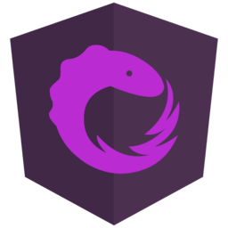

<ion-app>
  <ion-split-pane contentId="main-content">
    <ion-menu contentId="main-content" type="overlay">
      <ion-content>
        <ion-list id="inbox-list">
          <ion-list-header>
            <ion-item lines="none">
              <ion-thumbnail>
                
              </ion-thumbnail>
            </ion-item>
            Learn RxJS
          </ion-list-header>
          <!-- <ion-note>One example at a time</ion-note>           -->

          <div *ngFor="let p of appPages">
            <ion-menu-toggle auto-hide="false" *ngIf="p.url">
              <ion-item
                routerDirection="root"
                [routerLink]="[p.url]"
                lines="none"
                detail="false"
                routerLinkActive="active"
              >
                <ion-icon
                  slot="start"
                  [ios]="p.icon + '-outline'"
                  [md]="p.icon + '-sharp'"
                ></ion-icon>
                <ion-label>{{ p.title }}</ion-label>
              </ion-item>
            </ion-menu-toggle>
            <ion-item
              button
              *ngIf="p.children?.length > 0"
              lines="none"
              (click)="p.open = !p.open"
              [class.active-parent]="p.open"
              detail="false"
            >
              <ion-icon
                slot="start"
                name="caret-forward"
                *ngIf="!p.open"
              ></ion-icon>
              <ion-icon
                slot="start"
                name="caret-down"
                *ngIf="p.open"
              ></ion-icon>
              <ion-label>{{ p.title }}</ion-label>
            </ion-item>
            <ion-list *ngIf="p.open">
              <ion-menu-toggle auto-hide="false">
                <ion-item
                  *ngFor="let sub of p.children"
                  routerDirection="root"
                  [routerLink]="[sub.url]"
                  lines="none"
                  detail="false"
                  routerLinkActive="active"
                  class="sub-item"
                  button
                >
                  <ion-icon
                    slot="start"
                    [ios]="sub.icon + '-outline'"
                    [md]="sub.icon + '-sharp'"
                  ></ion-icon>
                  <ion-label>{{ sub.title }}</ion-label>
                </ion-item>
              </ion-menu-toggle>
            </ion-list>
          </div>
        </ion-list>

        <!-- <ion-list id="labels-list">
          <ion-list-header>Labels</ion-list-header>

          <ion-item *ngFor="let label of labels" lines="none">
            <ion-icon
              slot="start"
              ios="bookmark-outline"
              md="bookmark-sharp"
            ></ion-icon>
            <ion-label>{{ label }}</ion-label>
          </ion-item>
        </ion-list> -->
      </ion-content>
    </ion-menu>
    <ion-router-outlet id="main-content"></ion-router-outlet>
  </ion-split-pane>
</ion-app>
